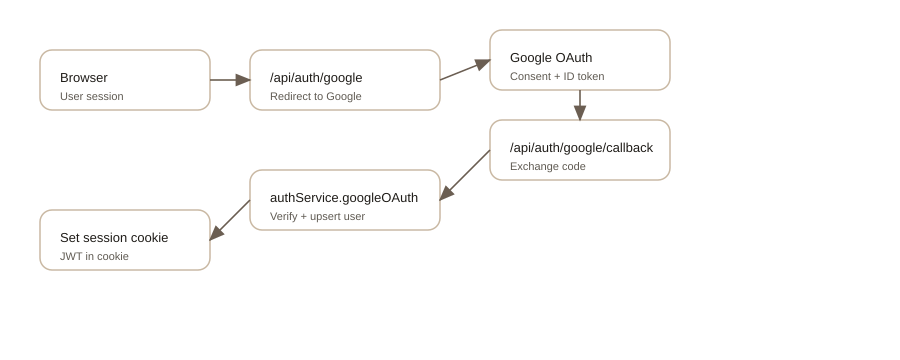

Authentication flow
How Google OAuth creates a session and how JWT cookies are used.
Google OAuth flow
- Client hits
/api/auth/googleto start OAuth. - User authenticates with Google and is redirected back.
-
/api/auth/google/callbackexchanges the code for an ID token. - Server verifies the ID token and creates or fetches a user.
-
A
sessionJWT cookie is set and the user is redirected.

Session lifecycle
- JWTs are signed with
BACKEND_JWT_SECRET_KEY. -
Protected routes check the cookie via
authService.extractSession. /api/auth/refresh-sessionrotates the token.-
/api/auth/sign-outoverwrites the session cookie.
Email/password sign-up exists for legacy users but is deprecated.
New accounts should use Google OAuth.